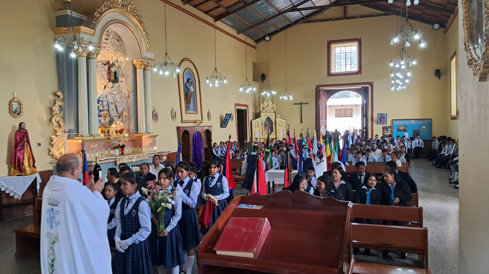
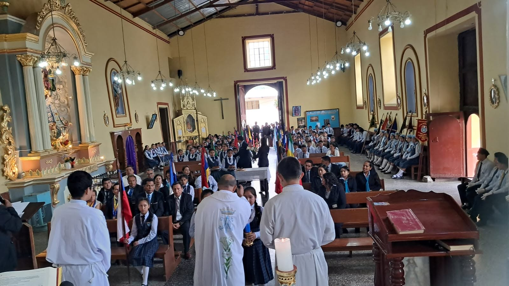
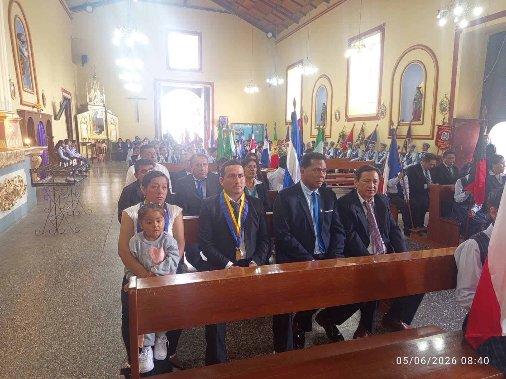
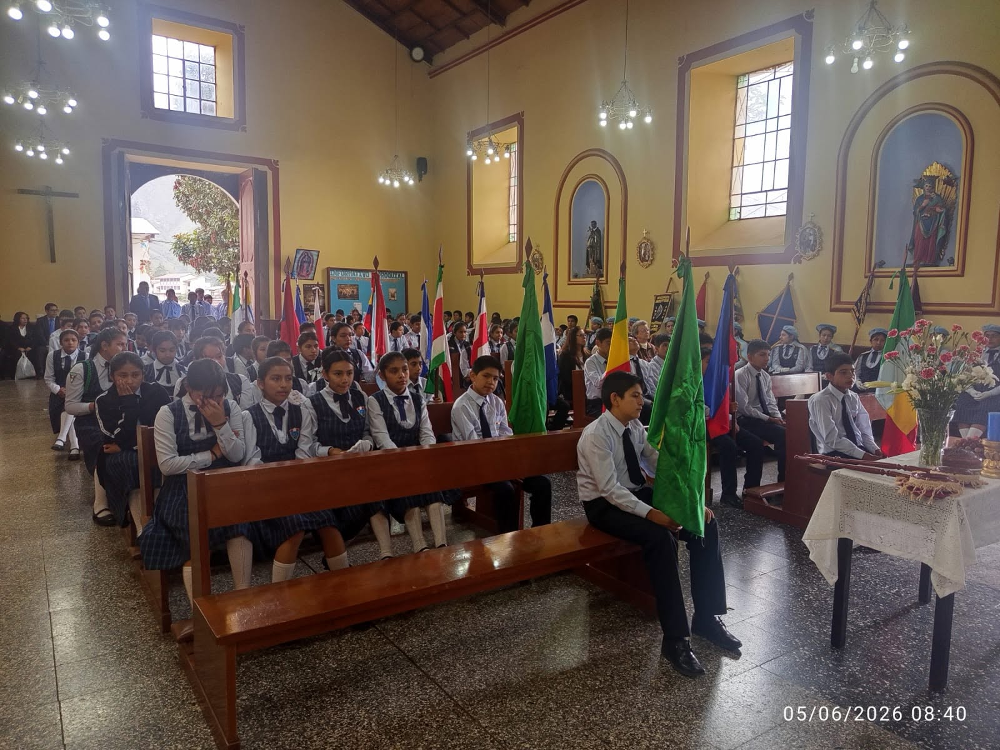
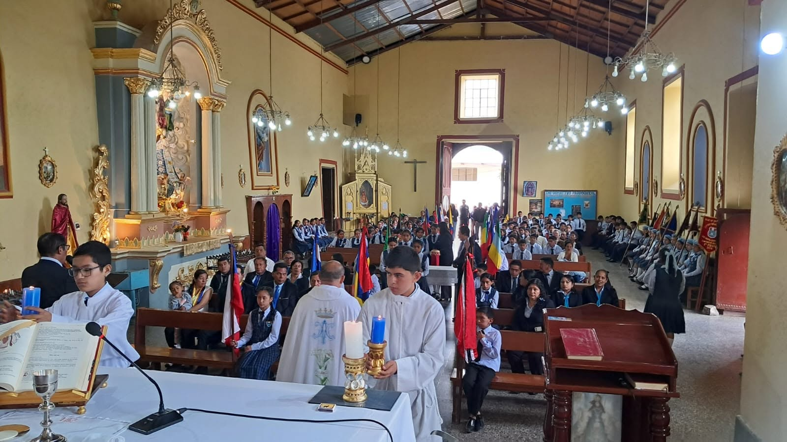
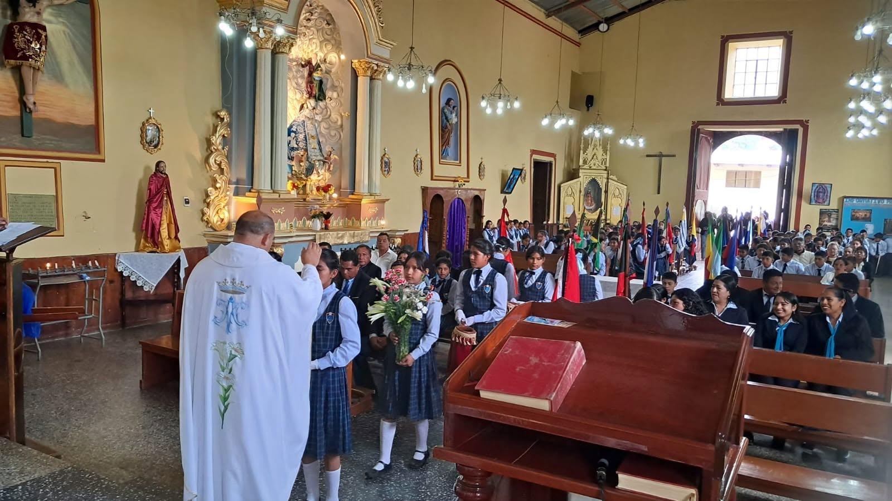

I.E. Virgen de la Asunción | Aniversario Institucional
Con motivo de conmemorarse un nuevo aniversario institucional, la I.E. “Virgen de la Asunción” participó en la Santa Misa de Acción de Gracias, un acto de profunda fe y reflexión que reunió a toda la comunidad educativa en un ambiente de unión espiritual.
La misa representó un momento de recogimiento espiritual en el que estudiantes, docentes, padres de familia y autoridades agradecieron por la guía divina recibida durante los años de formación académica, reafirmando su compromiso con la educación integral basada en valores.
Durante la ceremonia, participaron activamente estudiantes, docentes, personal administrativo y padres de familia, quienes vivieron con respeto y devoción este importante acto religioso, fortaleciendo los lazos de unidad institucional.
Este espacio permitió reflexionar sobre la misión educativa de la institución, destacando la importancia de formar estudiantes con valores, disciplina y compromiso social, guiados siempre por la fe y la esperanza.





